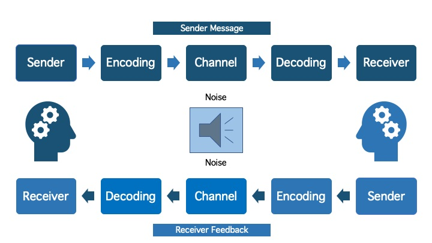
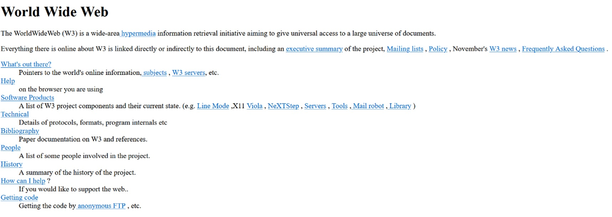

Hva er UX? UX er et akronym som står for User eXperience og kan oversettes til norsk som brukervennlighet. Brukervennlighet er begrepet som forklarer hvor vennlig noe er for brukere av alle slag, både de som har stor erfaring med produktet (eller tilsvarende produkter), men også de som aldri har vært eksponert for verken produktet eller andre tilsvarende produkter. Ux er et begrep som kan brukes om det meste, men i dette tilfelle er det ux i tilknytning webutvikling og annen data virksomhet vi vil fokusere på.
Hver gang man skal lansere noe nytt til massene er det viktig for oss å gjøre oss noen tanker om hvordan befolkningen vil ta i bruk produktet, ...
Det er viktig med god planlegging i alt man gjør, og den første fasen av UX handler akkurat om dette. User Experience er en lang prosess om den skal gjøres ordentlig, og den blir derfor delt inn i diverse faser. I denne teksten deler vi UX inn i 3 faser for å gjøre det enklere å forstå og fordøye. Den første fasen er den initielle fasen og grunnmuren for de to neste fasene. Lynch og Horton fastslår at en god plan er viktig, og at det er avgjørende å lokalisere de involverte aktørene og rollene deres. Man må bruke informasjonen til å gjøre en grundig kartlegging av deres behov før man begynner å løse problemet. (Lynch, 2016, s. 3) Her er det viktig å sikte for en sømløs og intuitiv opplevelse. Den første fasen er en viktig byggestein i utviklingen av nye systemer. Hvor bra fase to og tre er, blir irrelevant om vi feiler i å finne ut hvilke behov klienten har.
Først må vi finne ut hvilke behov klienten har og dette kan være en utfordrende oppgave. Ofte er det usikkert hva klienten vil ha, og mellom utvikleren og klienten er det mye rom for støy. Klienten må formidle hva de ønsker, deretter må dette budskapet dekodes av utvikleren. Mellom hvert av disse mellomleddene er det mulig å miste deler av budskapet til støy, og man kan fort ende opp med mistolkninger. Det kan også hende at klienten selv ikke vet hva de vil ha.
Figur 1. Transactional Model of Communication u. å., av Daniel Usera. (Hentet den 19. 11. 2023)
Fase en handler om å bruke godt med tid på å kartlegge brukeren av systemet som skal utvikles, og dette kan gjøres på en rekke måter. Vi kan bruke intervjuer for å komme med spesifikke eller målrettede spørsmål slik at vi lettere kan finne svar relatert til problemstillingen. Dersom vi ikke lurer på noe spesifikt, men heller bare ønsker input fra brukeren, kan kanskje høytlesning eller fokusgrupper være ideelt. Der får brukerne formidle tanker de kan ha om hva de ser for seg at produktet skal være (Lynch, 2016, s.44).
En god metode som også kan brukes går ut på å analysere brukeren i det daglige, for eksempel gjennom å følge dem én eller flere arbeidsdager. Dette kan være en veldig effektiv teknikk så fremt den gjøres riktig og at informasjonen som samles er autentisk. Dersom dette derimot blir gjort på en ordentlig måte, har vi en solid kilde til problemstillinger og bruksområder brukeren kan støte på. Dersom kartleggingsmetodene over blir vanskelig å gjennomføre eller vi føler vi trenger mer, kan vi analysere miljøet programmet skal brukes i. Ved å gjøre dette kan vi tenke oss frem til problemstillinger vi kan se for oss brukeren kan havne i, samt hvilke behov de trenger dekket (Lynch, 2016, s.43 og 45).
Det er også viktig å fortsette denne kartleggingsprosessen gjennom hele prosjektet, og også gjerne etter at programmet er ferdig. Når man lager prototyper av programmet, test det! Ta til deg feedback og utbedre små feil før de blir store. Slik kan man spare mye tid og ressurser. Det er kritisk å holde god dialog med klienten gjennom hele prosessen, ikke bare starten.
Gjennom fase en fikk vi kartlagt hvilke behov klienten har og hvor stort omfanget på prosjektet blir, fase to handler hovedsakelig om hvordan vi skal jobbe oss mot sluttproduktet, som regel ved hjelp av prototyper og informasjonsarkitektur. Vi kan dele ethvert prosjekt i to deler, begge deler av lik viktighet, disse er det vi ofte kaller for frontend og backend. (Simmons, 2023)
Frontend-utvikling er alt som brukeren samhandler med. “Front-end developers ensure that visitors can easily interact with and navigate sites by using programming languages, design skills, and other tools. They produce the drop-down menus, layouts, and designs for websites.” (Simmons, 2023). Omfanget til frontend-utvikling er derfor stort, og en som programmerer frontend må ha stor mestring og forståelse for en rekke kommunikasjonsteorier. Det som gjør frontend-utvikling så unikt er hvor fort det blir lagt merke til om noe ikke er på stell.
Med frontend-utvikling har man store muligheter for kreativt arbeid, det er bare fantasien som setter grensen for utformingen av en nettside. Dessverre er realiteten at man ofte ikke utvikler nettsider for moro skyld. Her kommer informasjonen fra fase en godt til nytte, innen starten av fase to har vi antageligvis bygget en tilstrekkelig forståelse for hva klienten ønsker/forventer i et produkt. Når man har en idé for utformingen av nettsiden er det vanlig å begynne arbeid på wireframes. Lynch og Horton forklarer wireframes som en veldig røff utforming av diverse elementer på en tenkt nettside/applikasjon, disse wireframene starter ofte skissert på en bunke papir, hvor forskjellige ark representerer forskjellige deler av nettstedet. (Lynch, 2016, s. 48) Dette er en kostnadseffektiv og enkel måte å spare ressurser på, og du slipper å utvikle mer enn nødvendig
Wireframe skoleapp 3nb, u. å, av Bruno José Teixeira Coelho og Stina Åshildsdatter Grolid (Hentet den 19. 11. 2023)
Frontend-utvikling er bare en halvdel av hva som får en nettside til å fungere: En kropp uten en hjerne er ikke til stor nytte. Backend-utvikling er alt som skjer i bakgrunnen, alt fra serverarbeid til informasjonsstrukturen blir gjort gjennom backend-utvikling (Simmons, 2023). Serverarbeidet er hva som gir nettstedet ditt en sjel, kroppen en hjerne. Med backend får man plutselig en rekke nye muligheter, det å lagre informasjon gjør det mulig for brukerne å blant annet lage kontoer, få skreddersydde forslag av algoritmene i nettbutikker eller utføre mer avanserte oppgaver. Der vi virkelig ser at backend-utvikling skinner derimot, er gjennom utvikling av programvare, der det er nesten eksklusiv bruk av “backend-programmer” som Python og Ruby (Simmons, 2023).
Hvis klienten er fornøyd med utformingen av wireframene, er det på tide å begynne arbeidet med prototyper. En prototype er en stor samling wireframes som sammen danner en delvis funksjonell nettside. Dette skaper en rekke lag som samlet gir illusjonen av et operativt nettsted. Det er vanlig å starte med å lage en papirprototype, og deretter med HTML-kode (Lynch & Horton, 2016, s 48-49).
Jo lenger man kommer i fase to, desto nærmere kommer man et ferdigstilt produkt. Fra idé, til wireframes og prototype, bygger man seg lagvis nærmere en ferdig nettside. Gjennom alle disse lagene er det viktig med god kontakt mellom utvikler og klient, slik at nettstedet kan representere dets eier på en ordentlig måte. Her er det også viktig å huske å spille på forventningene til klienten, slik at det forsikres at nettstedet blir tatt seriøst.
HTML er et formateringsspråk og en forkortelse for Hypertext Markup Language, hvor «Hypertext» representerer muligheten til å lenke til andre nettsider og «Markup» står for formatering, for eksempel at man angir en overskrift, en tekst eller en liste. (W3School, u. å.) Sir Tim Berners-Lee skapte HTML i 1991, og den første nettsiden som ble laget bestod kun av HTML og ser helt annerledes ut enn hvordan vi forventer at en nettside skal se ut i dag. (Cern, u. å.)
HTML ble først lansert i 1995 med HTML 2.0, etterfulgt av HTML 3.2 i 1997. Dette var den første versjonen som støttet CSS. HTML 4.1 ble en velbrukt versjon, hvor de hadde lagt til muligheter for å bruke blant annet JavaScript og multimedia. I dag bruker vi HTML5, som ble lansert i 2014. Nå er det i tillegg mulig å legge til tags, som blant annet «header», «footer» (Tutorials Tonight, u. å.). Når man for eksempel bruker taggen «video», så vil man se en play-knapp, volum-slider, etc. (Salvesen, 2015). Dette er fordi det ligger skjulte «web components» i taggen, og dette er nytt for HTML5. «Web components» har bydd på veldig mange spennende muligheter for utviklere, der man kan lage en ganske interaktiv side i HTML, med mediakaruseller, videoer med play-knapp og volum-slider, charts, mm. (Salvesen, 2015)
HTML kan sees på som skjelettet til en nettside. HTML-strukturen består av elementer, tagger, attributter og verdier. Innenfor et element vil man finne en tagg. En tagg består av et «mindre enn»- og et «større enn»-tegn, og man avslutter elementet med en tagg med skråstrek. Inni taggen er det et attributt som gir en verdi, for eksempel en lenke. (Johannessen, 2023)
Det er i HTML man bestemmer hva som skal være en paragraf og hva som er tittel, og hvor man legger inn blant annet bilder og videoer. Før brukte man HTML til både struktur og presentasjon, men har man en større nettside blir det mer oversiktlig og lettere å vedlikeholde dersom man holder det strukturelle i HTML og lar presentasjonen skrives inn i CSS.
Cascading Style Sheets (CSS) brukes til å lage presentasjonen til en nettside. «Cascading» viser til hvordan man «kan angi en stil for hele siden, deler av den, eller enkeltelementer». (Johannessen, 2023) «Style» står for hvordan det presenteres, mens «Sheet» beskriver at det lagres som en egen fil. Dette betyr at man kan bruke denne ene filen til å implementere presentasjonen for flere HTML-filer, noe som sparer tid og er mer oversiktlig. (Johannessen, 2023)
CSS ble oppfunnet i 1994 av en nordmann som heter Håkon Wium Lie, mens han jobbet med Sir Tim Berners-Lee i CERN. Tanken bak HTML var hele tiden å kunne separere struktur og presentasjon. Før CSS kom ut, kunne man endre presentasjonen i nettlesere, blant annet i «Viola», som kom ut i 1992. (Bos, 2016) Ulempen med dette var at de som skrev nettsider ikke hadde nok innflytelse på hvordan presentasjonen skulle se ut.
Microsoft Explorer 3, som ble lansert i 1996, var den første nettleseren som tilrettela for CSS, etterfulgt av Netscape Navigator 4. Noe som kanskje kan overraske, var at den tredje nettleseren som adopterte CSS, var Opera, som var utviklet av et lite selskap i Norge. De var de eneste som faktisk testet implementasjonen av CSS for de lanserte Opera, og Håkon Wium Lie var så imponert over dem, at han begynte å jobbe for dem. (Bos, 2016) Opera har hatt et fokus på å elegant tilpasse nettsider til mobiltelefoner, noe som har blitt viktigere etter hvert som mobiltelefoner og nettbrett har blitt mer populært.
Man bruker CSS for mye mer enn bare å endre farge og tekst. Det er også her man skaper et responsivt design, noe som er svært viktig da majoriteten av oss bruker andre enheter enn laptop. Ved å bruke «@media» kan man endre hvordan en nettside presenteres i ulike medier, for eksempel mobiltelefon, nettbrett og laptop. (Johannessen, 2023) Å programmere inn et responsivt design er viktig for presentasjonen, men også for filstørrelser. Det er unødvendig å ha et bilde av like god kvalitet på en mobiltelefon som en laptop, så man kan med fordel nedskalere bildet for en mindre skjerm. Dette gjøres enkelt ved å skrive inn prosent i stedet for piksel når man angir bredden på bildet. (Johannessen, 3013)
Med CSS finnes det uendelige muligheter for hvordan man vil presentere nettsiden sin, og vi anbefaler å besøke CSS Zen Garden for å få et innblikk til hvilke muligheter som er til stede med CSS.